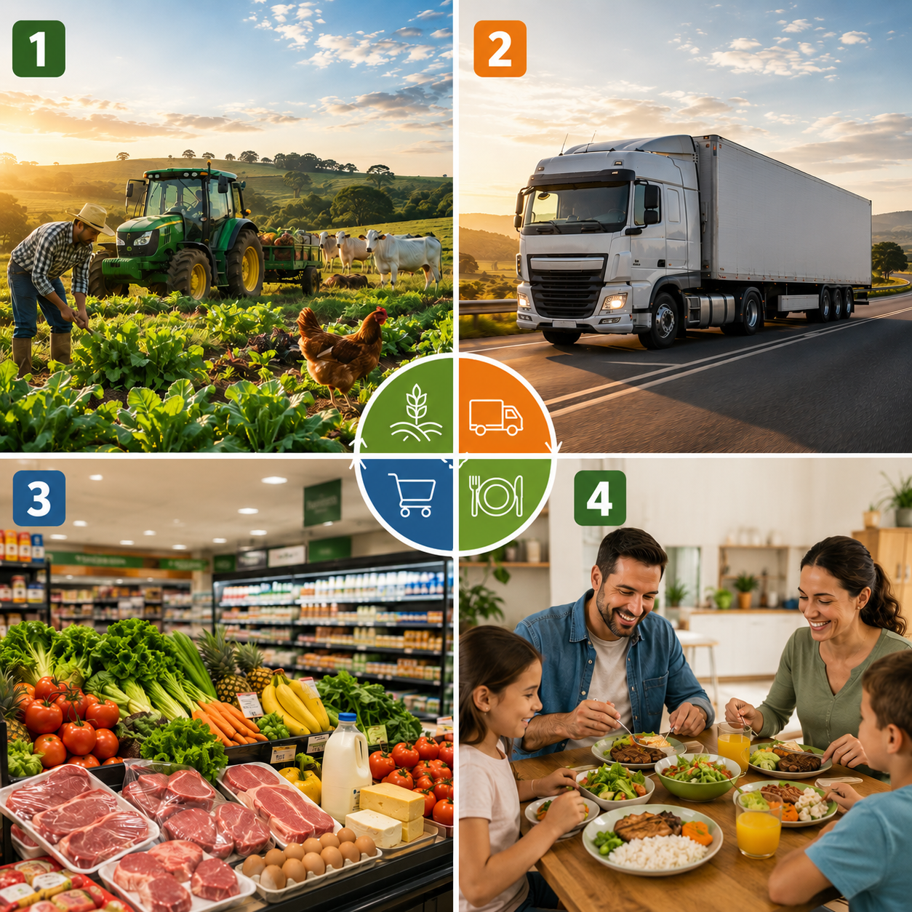

O agronegócio está presente em grande parte dos alimentos e produtos que utilizamos no dia a dia.
Ele envolve desde o trabalho realizado no campo, a agricultura, pecuária, o transporte e a comercialização desses produtos.
Sua importância está no fato de contribuir para o abastecimento da população, além de gerar empregos e movimentar a economia.
